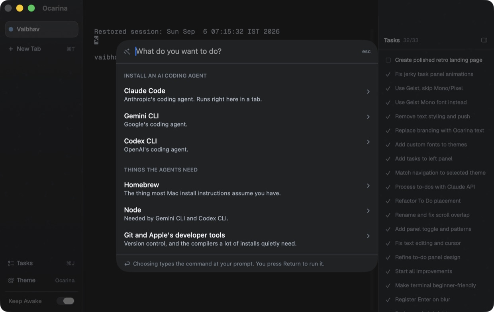

A terminal for macOS
Your first terminal
Every other terminal assumes you already know the answer. Ocarina is built for the moment before that — for people who came from a web interface, opened Terminal once, and closed it again.
The terminal should never require you to already know the answer.

What this is about
A different product, not a smaller one.
A developer terminal earns its keep with power: panes, plugins, profiles, a config language. All of it assumes you know what to type, what broke, and what to install. For someone whose first terminal is this one, every one of those assumptions fails at the same moment — and the session ends.
Ocarina removes the need to know rather than adding another way to be expert. It carries the commands you would otherwise go and find in a browser. It reads what you asked your coding agent and keeps the list. When something fails, it offers to explain it. And it is opinionated about staying small: no plugin system, no config language, nothing to learn before you can open it.
Inside
Three things you can see.
Install something without opening a browser
The old path was: find the docs, copy a line you cannot read, come back, paste, hope. Quick Actions carries those commands — Claude Code, Gemini CLI, Codex, Homebrew, Node — and nothing in it runs itself. Choosing types the command at your prompt and says what it does. You press Return.
That is the whole point. curl … | bash is exactly the
pattern a beginner should never learn to trust on sight, and seeing
the command each time is how you stop needing the drawer at all.

Remember what you asked the agent
Give an agent five things across twenty minutes and you will not remember which it actually got to. The Tasks panel reads the transcript your agent already writes and keeps the list — Claude names each line, so it reads like a to-do rather than a log.
It says finished, never “done”. The only signal available is that the agent stopped talking, which is not the same as the work being right, and the wording should not claim more than the data supports.

Fourteen themes, and none of them can hide an error
Colour, texture and type all move together: a faint motif behind the panels — cherry blossoms, brushed metal, falling glyphs — and Geist throughout, bundled rather than borrowed from your system.
Every theme is checked against a contrast floor before it is offered. A pretty palette that makes error text unreadable is not a cosmetic problem for someone who cannot yet read errors — it is the end of the session, so a theme that fails simply does not appear.


What is the separation?
Other terminals add power. This one removes the need to know.
Every other terminal
- Twenty tabs all named
zsh - A config file you have to learn first
- An error is a wall of text and a dead end
- Pasting from a website is on you
- Installing anything starts in a browser
- Features aimed at people who already know
Ocarina
- Tabs named for what they are doing
- Nothing to configure before it is useful
- A failure offers to explain itself
- A risky paste is described before it lands
- The commands are already here
- Built for the first hour, not the thousandth
What makes it great?
The details are all the same detail.
Each of these is the same decision made again: assume the person reading cannot yet recover from a mistake, and design so they do not have to.
Nothing runs itself
Every path that puts a command in front of you types it and stops. The last act is always yours.
Legibility is enforced, not hoped for
All sixteen ANSI colours in every theme are contrast-checked. A theme that fails is listed as broken rather than quietly shipped.
It says what it can support
“Finished”, not “done”. A refused keep-awake shows as refused. The interface does not claim more than it knows.
A paste is read before it lands
Ordinary commands paste silently — a terminal that interrupts everything is one you learn to click through. Only multi-command or destructive text stops for a sentence.
It knows when work is happening
A dot per tab, driven by the shell itself, so a silent sleep 30 still reads as busy and a failure reads as red.
Small on purpose
No plugin system, no scripting layer, no profile format. The whole app is one window you can describe in a sentence.
Who is it for?
People building with agents, not with tooling
You describe what you want, an agent writes it, and the terminal is simply where that happens. You do not want to become good at the terminal — you want it to stop being the obstacle.
Anyone whose first terminal is this one
No technical background assumed. If you have never installed anything from a command line, the first thing you will need is the thing ⌘K already has.
Not for everyone, and that is the point
If you want tmux integration, split panes, a plugin ecosystem and a config language, this is the wrong terminal and it always will be. Those are good features. They are also the bulk that sent this user away in the first place.